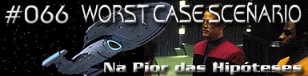
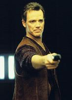
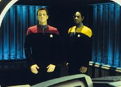
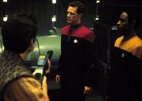
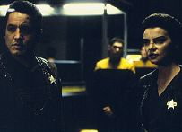
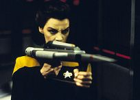

|
Voyager
Temporada 3

Análise do episódio por
Daniel Sasaki


|

|
MANCHETE
DO EPISÓDIO Data Estelar: 50953.4. Depois que Janeway e Paris partem em uma missão avançada, Chakotay lidera uma rebelião Maquis na Voyager. Com a ajuda de Torres, ele toma o controle da nave e avisa que os princípios da Federação não ficarão mais no caminho de um meio mais curto de chegar em casa. Neste momento Paris entra e pergunta a Torres o que está acontecendo. Irritada, ela pára o programa do holodeck que estava rodando - todo o cenário da rebelião fazia parte de uma holo-novela que a tenente acabara de descobrir.  A identidade do autor é desconhecida, mas Paris fica fascinado pelo tema. Ele reinicia o programa e o roda com algumas modificações. Mas, na hora em que a novela atinge o seu clímax, ela pára abruptamente e o piloto descobre que quem a escreveu nunca completou a história.A história logo vira falatório pela nave, e Tuvok finalmente admite ser o autor. Ele diz que a escreveu como um exercício de treinamento tático quando as tripulações Maquis e da Federação se juntaram. Já que a integração se deu tranqüilamente, o tenente não se preocupou em terminar o programa. Mas, depois que Paris se candidata a completar a narrativa, Tuvok decide colaborar na tarefa. Quando os parâmetros do conto são reabertos para o capítulo final, uma versão holográfica de Seska aparece; a Seska verdadeira tinha descoberto o programa do Vulcano antes de deixar a nave e decidiu terminá-lo a seu modo. Ela diz a Tuvok que selou o holodeck e desativou os protocolos de segurança; se disparar contra eles, os oficiais morrerão.  Tuvok e Paris descobrem logo que o cenário de Seska é mortal. Ela havia colocado armadilhas nas sub-rotinas, o que significa que um passo em falso poderia significar a destruição da nave. Fora do holodeck, a tripulação descobre o que a cardassiana havia feito e tenta encontrar um modo de ajudar a dupla e apuros.Enquanto Seska se prepara para executar Tuvok e Paris, a capitã verdadeira trabalha incansavelmente para reescrever a narrativa. Seus esforços distraem Seska o suficiente para Tuvok causar um mal-funcionamento no phaser que a cardassiana usava, matando-a e terminando, assim, o programa. Os oficiais cumprimentam Janeway por suas habilidades literárias e a tripulação decide escrever uma nova aventura no holodeck.
"Worst Case Scenario" é o que Voyager deveria ter sido, mas nunca foi. Uma das mais fortes críticas direcionadas à série é o fato de os Maquis terem se integrado muito rapidamente à tripulação da Frota e sem conflito algum. Já ao final de "Caretaker" o público vê que tem algo errado no ar: todos a bordo usam uniformes.  Até a metade do episódio, a história se desenvolve muito bem. B'Elanna descobre um programa no holodeck, em que uma rebelião Maquis é criada por um autor desconhecido. A simulação logo fica popular entre os tripulantes e desperta a curiosidade pela identidade desse talentoso autor. Os "e se" logo vêm à mente de todos. E se os Maquis tivessem decidido tomar o controle da Voyager nos primeiros dias da viagem, quando os humores das tripulações estavam à flor da pele? Se tivessem sido bem-sucedidos na ação, como a teriam executado? Apesar de restrito à fantasia do holodeck, o roteiro intriga por levantar essas questões, sempre indagadas pela audiência. Biller também foi muito feliz em revelar logo que se tratava de uma aventura holográfica. Teria sido desastroso se os fãs descobrissem a verdade apenas no final da história. O engraçado é que, dada a natureza controversa do programa, ninguém admite que o está rodando e, sendo a Voyager uma nave pequena, o segredo há muito se espalhou pelos decks. A coisa só vem à tona quando Janeway levanta a questão durante uma reunião com os oficiais superiores. Nesse momento, Tuvok revela ser o talentoso autor e confessa que não o escreveu como obra artística, mas como um treinamento de segurança para o caso de a situação com os Maquis sair do controle. Como isso nunca aconteceu, o Vulcano apagou o arquivo.  Embora o personagem de Tim Russ geralmente se passe por chato, ele representa o tipo de roteirista que os fãs gostariam de ter, e, Paris, o que os fãs têm. Tuvok acredita que os eventos de uma história devem condizer com as ações dos personagens estabelecidas no passado. Janeway jamais ordenaria a execução de alguém. Já Paris acredita que, se há algo que torne a história interessante, as "falhas de continuidade" são aceitáveis. Soa familiar? Mas é quando a dupla finaliza o programa e o roda que "Worst Case Scenario" dá uma guinada violenta. O episódio começa centrado em uma controvérsia importante que instiga o fã a acompanhar atentamente o que se passa. Porém, de repente, o público é apresentado a uma outra trama, completamente diferente da primeira. Num piscar de olhos, o roteiro se transforma no velho e batido "oficiais presos no holodeck" com um inimigo.  Assim, enquanto a primeira metade do roteiro é a lógica que a série deveria ter seguido, a segunda é totalmente implausível e descartável, talvez uma apologia à forma como os roteiristas trataram questões fundamentais nas temporadas anteriores. Furos à parte, é seguro dizer que "Worst Case Scenario" é uma hora de diversão. Apesar das reviravoltas, o segmento entretém o telespectador. Seska ainda é a vilã mais forte da série, ainda que tenha sido mal utilizada, e Chakotay até sabe fazer alguma coisa além de se sentar em sua poltrona na Ponte.
Paris - "Well, it's not as if
I caught you dancing the rhumba with a naked Bolian." Janeway - "You've just
threatened the wrong woman, Chakotay." Neelix - "I just have a
couple of comments... about the Neelix character". Paris - "I guess we should
have known Seska wouldn't let a little thing like death stop her
from getting even."
Escrito por Kenneth Biller Elenco: Kate Mulgrew como
Kathryn Janeway Elenco convidado: |